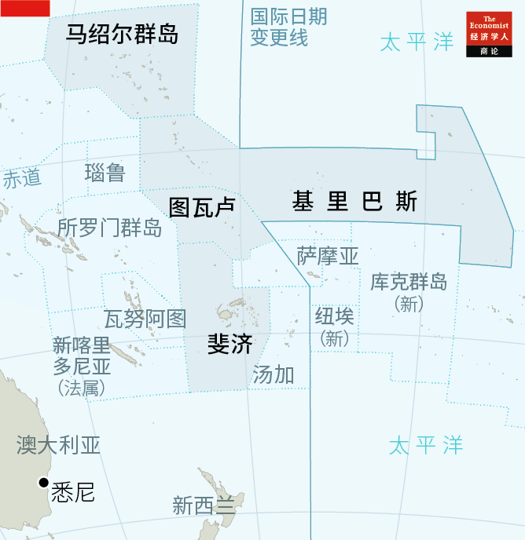
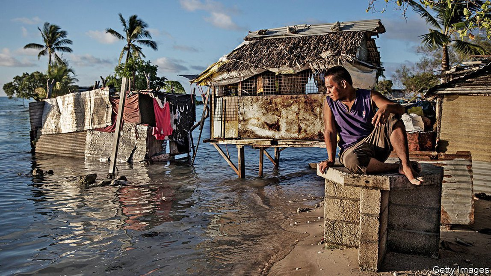
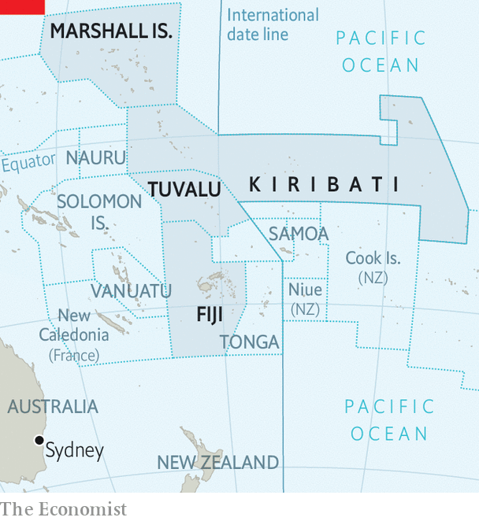

2021-08-19T15:34:09+00:00
“动人”故事
太平洋岛国面临的问题比沉没更复杂
气候变化的其他影响更紧迫、多样化和不可预测

“一个国家如何逃脱被大海吞没的厄运？”纪录片《安诺方舟》（Anote’s Ark）的宣传语写道。该片记录了基里巴斯前总统汤安诺（Anote Tong）走访全球、提醒世人他的岛国正在沉没的经历。2014年，他在斐济买了20平方公里的土地，好让基里巴斯的12万多人“在不得已时”能搬去那里。
《安诺方舟》一片于2018年上映，此时汤安诺已卸任两年。继任政府对此片反应冷淡。 “这就是一出戏，就和《星球大战》一样，”基里巴斯驻联合国大使塞布罗罗·斯托（Teburoro Tito）说，“故事本身很有说服力。但我必须说，它讲的不是实情。”在斐济买的那块地正在被改造成一个商业农场。
斯托所言有一定道理。现供职于加拿大西蒙菲莎大学（Simon Fraser University）的保罗·肯奇（Paul Kench）在过去几十年里测量了27个环状珊瑚礁的面积变化，他在2010年发表的研究结果显示，尽管其中14%的环礁面积缩小了，并有个别环礁消失，但其中43%的环礁面积保持不变，而其余43%的面积还有所增加。许多环礁已经能够适应海平面的上升，随沉积物被侵蚀和转移而改变形状。例如，图瓦卢的陆地表面在1971年至2014年之间增加了3%，尽管周围海平面每年上升4毫米，是同期全球平均水平的两倍。肯奇认为汤安诺关于岛屿沉没的故事“在很大程度上是一种煽情叙事”。
这样的叙事有它的用处。基里巴斯、图瓦卢和马绍尔群岛是南太平洋深处的低洼群岛（见地图），属于最先面临气候变化全面冲击的那批国家。汤安诺这样的故事有助于吸引国际关注和急需的资金——世界上15个最依赖援助的国家中有七个是太平洋岛国。但气候变化还有其他一些更直接的影响威胁着这些国家人民的生命和生计。这些影响不那么引人注目，也更难解释，而且就像岛屿的形状和大小不断变化那样，有时还有悖直觉。但结果都一样，那就是这些国家可能很快就会变得无法居住。
先说岛屿形状变化的现象。建立气候科学共识的机构政府间气候变化专门委员会（IPCC）警告说，沿海生态系统的自然适应可能只是暂时的，而海平面上升速度加快、海浪增强和人口增长可能会降低其适应能力。
这是一种风险。另一种更为紧迫的风险源自哪怕是小幅度的海平面上升。这会导致潮汐异常偏高，会短暂但完全淹没大多数环礁那狭窄的低洼陆地部分。这种被称作“国王大潮”的超级大潮正变得日益频繁。海水会杀死香蕉和木瓜等作物，并渗入地下水中导致其不宜饮用。海水淡化厂成本高，并且和所有机器一样可能会出现故障。 “这些岛屿并没有在沉没，”基里巴斯前经济顾问迈克尔·沃尔什（Michael Walsh）说，“但人类和植物很可能会因为缺水而死。”
天气模式的变化是又一个因素，可能导致低洼岛屿在大批消失之前很久就已不再适合居住。去年，飓风“哈罗德”损毁了瓦努阿图的2.1万所房屋。2015年的飓风“帕姆”是有史以来袭击南太平洋的最强飓风之一。预计该地区的飓风和海啸将变得日益猛烈。
许多岛屿上的居民已经搬离了家园。约三万名马绍尔人（占该国人口三分之一以上）迁去了美国，其中许多是在过去20年中移民的。不过很少有人说自己搬家是因为气候变化。研究机构马绍尔群岛气候与移民项目（Marshall Islands Climate and Migration Project）指出，这些移民给出的主要原因是“教育、医疗、工作和亲缘关系”。
太平洋岛国本就贫穷并依赖援助，新冠疫情对它们的打击尤为严重。旅行限制重创了旅游业，也阻碍了前往澳大利亚和新西兰的季节性劳动力迁移。
太平洋岛国的领导人想出了些重振经济的点子。图瓦卢通过授权.tv互联网域名赚了不少钱（和瓦努阿图一样，它还向外国富人出售护照）。现在它想要建立网上银行系统并提供更多在线服务。同时，有一些方法可以让这个岛国继续适于居住。基里巴斯计划疏浚泻湖，然后用挖出的沙子将周围的岛屿垫高到海平面以上。图瓦卢已经启动了一个土地开垦项目。但气候变化的阴影增加了为此类计划吸引投资的难度。“许多人会说‘我们不能在你们国家投资，你们没希望了’， 我正在试图改变他们的想法。”基里巴斯的斯托说。
和汤安诺不得已而为之的计划一样，令人沮丧的长期解决方案可能是搬迁。马绍尔群岛希望与美国重新谈判将于2023年到期的后殖民性质的《自由联合协定》（Compact of Free Association），以确保所有马绍尔人都能在美国拥有永久居留权。图瓦卢没有这样的选择。气候活动家麦娜·塔莉亚（Maina Talia）认为，图瓦卢政府应该考虑斐济的收留提议，去那里建立新家园，让图瓦卢人可以维续自己的文化，而不是“被丢到悉尼的什么地方”。
图瓦卢政府在不久前还坚持认为不需要后备方案，但在今年早些时候发起了一项新的联合国倡议。其目标是与“志同道合的国家”合作，研究大家可以往哪搬，怎么搬，搬迁之后如何继续运作，以及如果岛屿被海水淹没，它们是否仍然可以拥有广阔的专属经济区。
举国搬迁在国际体系和人们对独立国家的认知方面也会引发其他重大问题。“如何做好准备让一个国家有尊严地搬迁，在这件事上没有经验可循。”移民专家卡马尔·阿玛克兰（Kamal Amakrane）说。他的想法促成了上文提到的联合国倡议。他相信需要搬迁的各国将能够保留作为一个独立国家的所有要素，但认为全球需要现在就开始规划。“这是大势所趋，”阿玛克兰警告说，“我们有10到15年的时间来做准备。”
2021-08-19T15:34:09+00:00
Moving story
Pacific countries face more complex problems than sinking
Other effects of climate change are more urgent, more varied and more unpredictable
“HOW DOES a nation survive being swallowed by the sea?” So went the tagline for “Anote’s Ark”, a documentary film following Anote Tong, then president of Kiribati, as he toured the world warning that his islands were drowning. In 2014, he bought 20 square kilometres of land in Fiji, for Kiribati’s 120,000-odd people to move to as a “last resort”.
“Anote’s Ark” came out in 2018, two years after Mr Tong retired. The government that succeeded his was unimpressed. “It’s a drama, like a Star Wars film,” says Teburoro Tito, Kiribati’s ambassador to the UN. “The story is very convincing, but I must say, it’s not true.” The land in Fiji is being turned into a commercial farm.
Mr Tito has a point. In research published in 2010, Paul Kench, now at the Simon Fraser University in Canada, measured the size of 27 atolls over a period of decades and found that while 14% had shrunk and a couple had disappeared, 43% stayed the same size and another 43% became bigger. Many of the ring-shaped coral reefs have been able to adapt to sea-level rise, changing shape as sediment is eroded and pushed around. Tuvalu’s land surface, for instance, increased by 3% between 1971 and 2014 despite a rise in the local sea level of 4mm a year, twice the global average for that period. Mr Kench describes Mr Tong’s tale of sinking islands as “largely an emotional narrative”.
Such narratives have their uses. Kiribati, Tuvalu and the Marshall Islands, low-lying archipelagoes deep in the South Pacific (see map), are among the first countries to face the full onslaught of climate change. Stories like Mr Tong’s help capture international attention and much-needed funding—seven of the world’s 15 most aid-dependent countries are islands in the Pacific. But there are other, more immediate effects of climate change that threaten the lives and livelihoods of the citizens of these countries. They are less arresting, harder to explain and, as in the changing shape and size of islands, sometimes counterintuitive. But the upshot is the same: the countries may soon become uninhabitable.
Start with the phenomenon of shape-shifting islands. The Intergovernmental Panel on Climate Change, a consensus-building body on climate science, warns that the natural adaptation of coastal ecosystems may be only temporary: faster rates of sea-level rise, stronger waves and a growing human population may reduce their capacity to adapt.
That is one risk. Another, more urgent one stems from even small rises in the sea level. These can cause exceptionally high tides to briefly but entirely inundate the narrow strips of low-lying land that comprise most atolls. Such “king tides”, as they are known, are becoming more frequent. The saltwater can kill crops such as banana and papaya and seeps into groundwater, making it unfit to drink. Desalination plants are pricey and, like all machines, can fail. “The islands are not drowning,” says Michael Walsh, a former economic adviser to Kiribati. “But, humans and plants alike, they may well die of thirst.”
Changing weather patterns are another factor that could make low-lying islands uninhabitable long before most of them disappear. Last year, Cyclone Harold damaged 21,000 houses in Vanuatu. Cyclone Pam in 2015 was one of the strongest ever to hit the South Pacific. Cyclones and tsunamis in the region are predicted to become ever more intense.
Many islanders have picked up and moved. Some 30,000 Marshallese, or more than a third of the country’s people, have migrated to America, many in the past two decades. Yet few cite climate change as the reason for their move. The Marshall Islands Climate and Migration Project, a research outfit, notes that the main reasons given are “education, health care, work, and family connections”.
Already poor and dependant on aid, Pacific island countries have been particularly hard hit by covid-19. Travel restrictions have decimated the tourism industry and curbed seasonal migration to Australia and New Zealand.
Pacific leaders have ideas to revive their economies. Tuvalu makes lots of money from licensing its .tv internet domain (along with Vanuatu, it also sells passports to rich people). It now wants to set up an internet banking system and offer more services online. There are also ways to keep islands habitable: Kiribati plans to dredge its lagoons and use the sand to raise the surrounding islands higher above the sea. Tuvalu has embarked on a land-reclamation project. But the spectre of climate change makes it harder to drum up investment for such schemes. “I am trying to change the minds of the many people who say, ‘We cannot invest in your country, you’re finished’,” says Kiribati’s Mr Tito.
The depressing long-term solution, as in Mr Tong’s last resort, may be to move. The Marshall Islands hopes to renegotiate its post-colonial “Compact of Free Association” with America, which expires in 2023, to ensure a permanent right of residence in the United States for all Marshallese. Tuvalu has no such option. Maina Talia, a climate activist, thinks that the government should take Fiji up on its offer of a home where Tuvaluans could practise the same culture rather than “be dumped somewhere in Sydney’‘.
Earlier this year, the government of Tuvalu, which until recently insisted that there would be no Plan B, established a new UN initiative. Its aim is to work with “like-minded countries” to figure out how and where such countries could be relocated, how they could continue to function ex-situ, and whether they could still lay claim to vast exclusive economic zones if their land disappeared under water.
Relocating a country would raise other big questions, too, for both the international system and the way in which people think about statehood. “How to prepare to move a nation in dignity, that has never been done before,” says Kamal Amakrane, a migration expert whose ideas helped spark the UN initiative. He is confident that countries would be able to retain all the elements of statehood, but says that the world needs to start planning now. “This is happening,” Mr Amakrane warns. “We have 10-15 years to prepare for it.” ■
2021-08-19T15:34:09+00:00
“動人”故事
太平洋島國面臨的問題比沉沒更複雜
氣候變化的其他影響更緊迫、多樣化和不可預測
“一個國家如何逃脫被大海吞沒的厄運？”紀錄片《安諾方舟》（Anote’s Ark）的宣傳語寫道。該片記錄了基里巴斯前總統湯安諾（Anote Tong）走訪全球、提醒世人他的島國正在沉沒的經歷。2014年，他在斐濟買了20平方公里的土地，好讓基里巴斯的12萬多人“在不得已時”能搬去那裡。
《安諾方舟》一片於2018年上映，此時湯安諾已卸任兩年。繼任政府對此片反應冷淡。 “這就是一齣戲，就和《星球大戰》一樣，”基里巴斯駐聯合國大使塞布羅羅·斯托（Teburoro Tito）說，“故事本身很有說服力。但我必須說，它講的不是實情。”在斐濟買的那塊地正在被改造成一個商業農場。
斯托所言有一定道理。現供職於加拿大西蒙菲莎大學（Simon Fraser University）的保羅·肯奇（Paul Kench）在過去幾十年里測量了27個環狀珊瑚礁的面積變化，他在2010年發表的研究結果顯示，儘管其中14%的環礁面積縮小了，並有個別環礁消失，但其中43%的環礁面積保持不變，而其餘43%的面積還有所增加。許多環礁已經能夠適應海平面的上升，隨沉積物被侵蝕和轉移而改變形狀。例如，圖瓦盧的陸地表面在1971年至2014年之間增加了3%，儘管周圍海平面每年上升4毫米，是同期全球平均水平的兩倍。肯奇認為湯安諾關於島嶼沉沒的故事“在很大程度上是一種煽情敘事”。
這樣的敘事有它的用處。基里巴斯、圖瓦盧和馬紹爾群島是南太平洋深處的低洼群島（見地圖），屬於最先面臨氣候變化全面衝擊的那批國家。湯安諾這樣的故事有助於吸引國際關注和急需的資金——世界上15個最依賴援助的國家中有七個是太平洋島國。但氣候變化還有其他一些更直接的影響威脅着這些國家人民的生命和生計。這些影響不那麼引人注目，也更難解釋，而且就像島嶼的形狀和大小不斷變化那樣，有時還有悖直覺。但結果都一樣，那就是這些國家可能很快就會變得無法居住。
先說島嶼形狀變化的現象。建立氣候科學共識的機構政府間氣候變化專門委員會（IPCC）警告說，沿海生態系統的自然適應可能只是暫時的，而海平面上升速度加快、海浪增強和人口增長可能會降低其適應能力。
這是一種風險。另一種更為緊迫的風險源自哪怕是小幅度的海平面上升。這會導致潮汐異常偏高，會短暫但完全淹沒大多數環礁那狹窄的低洼陸地部分。這種被稱作“國王大潮”的超級大潮正變得日益頻繁。海水會殺死香蕉和木瓜等作物，並滲入地下水中導致其不宜飲用。海水淡化廠成本高，並且和所有機器一樣可能會出現故障。 “這些島嶼並沒有在沉沒，”基里巴斯前經濟顧問邁克爾·沃爾什（Michael Walsh）說，“但人類和植物很可能會因為缺水而死。”
天氣模式的變化是又一個因素，可能導致低洼島嶼在大批消失之前很久就已不再適合居住。去年，颶風“哈羅德”損毀了瓦努阿圖的2.1萬所房屋。2015年的颶風“帕姆”是有史以來襲擊南太平洋的最強颶風之一。預計該地區的颶風和海嘯將變得日益猛烈。
許多島嶼上的居民已經搬離了家園。約三萬名馬紹爾人（占該國人口三分之一以上）遷去了美國，其中許多是在過去20年中移民的。不過很少有人說自己搬家是因為氣候變化。研究機構馬紹爾群島氣候與移民項目（Marshall Islands Climate and Migration Project）指出，這些移民給出的主要原因是“教育、醫療、工作和親緣關係”。
太平洋島國本就貧窮並依賴援助，新冠疫情對它們的打擊尤為嚴重。旅行限制重創了旅遊業，也阻礙了前往澳大利亞和新西蘭的季節性勞動力遷移。
太平洋島國的領導人想出了些重振經濟的點子。圖瓦盧通過授權.tv互聯網域名賺了不少錢（和瓦努阿圖一樣，它還向外國富人出售護照）。現在它想要建立網上銀行系統並提供更多在線服務。同時，有一些方法可以讓這個島國繼續適於居住。基里巴斯計劃疏浚瀉湖，然後用挖出的沙子將周圍的島嶼墊高到海平面以上。圖瓦盧已經啟動了一個土地開墾項目。但氣候變化的陰影增加了為此類計劃吸引投資的難度。“許多人會說‘我們不能在你們國家投資，你們沒希望了’， 我正在試圖改變他們的想法。”基里巴斯的斯托說。
和湯安諾不得已而為之的計劃一樣，令人沮喪的長期解決方案可能是搬遷。馬紹爾群島希望與美國重新談判將於2023年到期的後殖民性質的《自由聯合協定》（Compact of Free Association），以確保所有馬紹爾人都能在美國擁有永久居留權。圖瓦盧沒有這樣的選擇。氣候活動家麥娜·塔莉亞（Maina Talia）認為，圖瓦盧政府應該考慮斐濟的收留提議，去那裡建立新家園，讓圖瓦盧人可以維續自己的文化，而不是“被丟到悉尼的什麼地方”。
圖瓦盧政府在不久前還堅持認為不需要後備方案，但在今年早些時候發起了一項新的聯合國倡議。其目標是與“志同道合的國家”合作，研究大家可以往哪搬，怎麼搬，搬遷之後如何繼續運作，以及如果島嶼被海水淹沒，它們是否仍然可以擁有廣闊的專屬經濟區。
舉國搬遷在國際體系和人們對獨立國家的認知方面也會引發其他重大問題。“如何做好準備讓一個國家有尊嚴地搬遷，在這件事上沒有經驗可循。”移民專家卡馬爾·阿瑪克蘭（Kamal Amakrane）說。他的想法促成了上文提到的聯合國倡議。他相信需要搬遷的各國將能夠保留作為一個獨立國家的所有要素，但認為全球需要現在就開始規劃。“這是大勢所趨，”阿瑪克蘭警告說，“我們有10到15年的時間來做準備。”